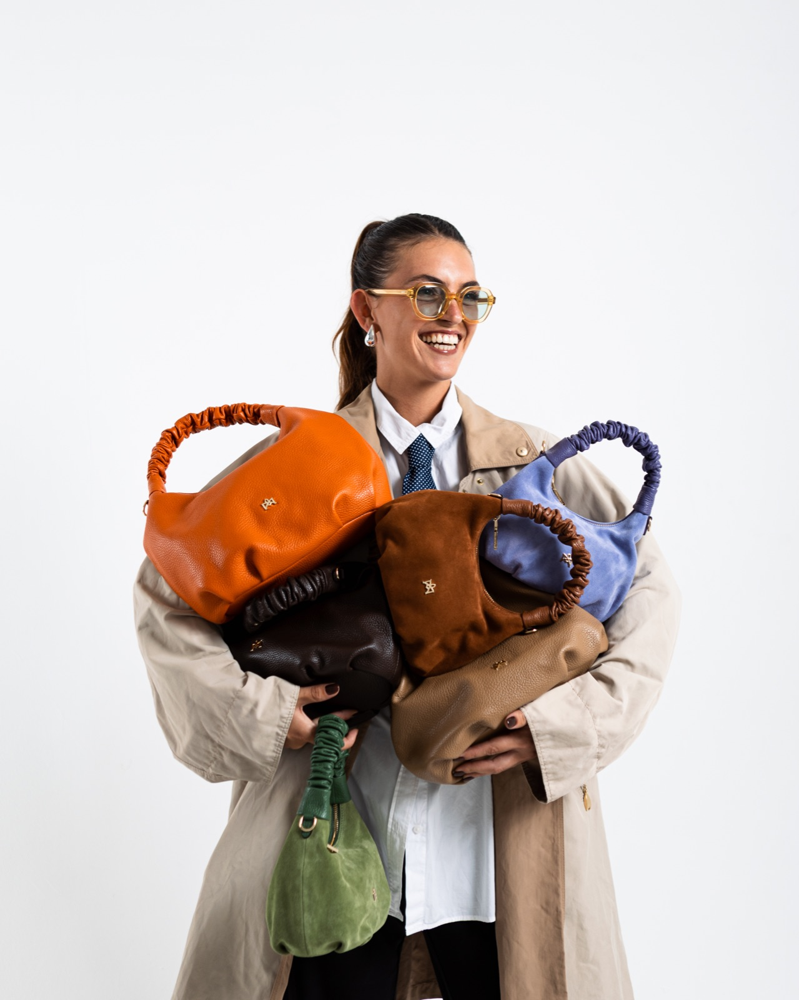
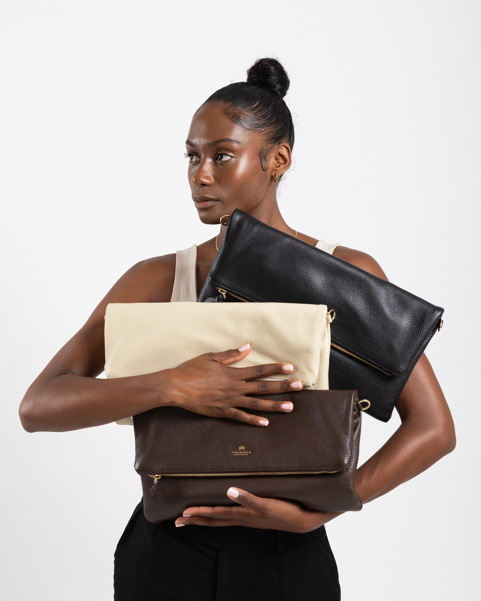

The 1/1 Collection
A studio campaign celebrating the one-of-a-kind nature of Aliverti's bags. Clean backdrops, dynamic styling, and close attention to colour and texture let each piece – supple leather, rich suede, singular shades – speak for itself.
The real selling point of our Cuoieria Fiorentina bags is exclusivity: nine times out of ten, we carry just one of each. In store, that exclusivity does a lot of work – a salesperson can say it out loud the moment someone picks up a bag, but online we struggled to land the same message. This campaign set out to solve that: translating a line that lands so well in person into something the imagery itself could communicate. With an audience that already responds to exclusivity, the clean, considered studio treatment was a way to make each bag feel like the singular object it is.


